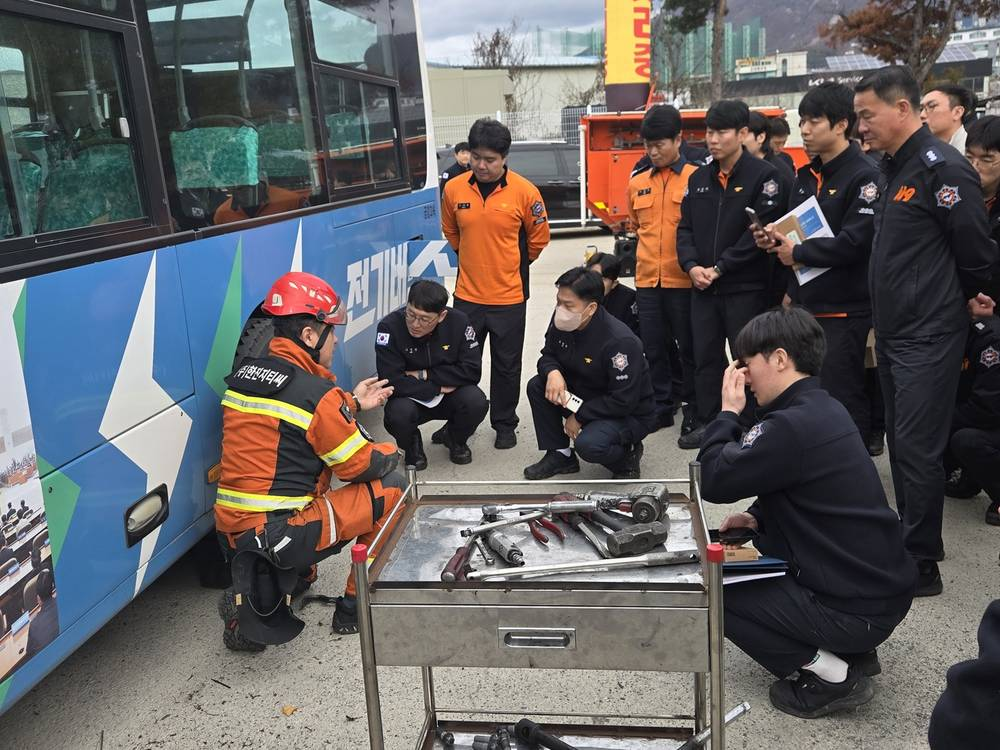

전기버스 화재 대응, 경기 소방관 62명 실습 교육

경기도기술학교가 11월 17일 양평소방서에서 고전압 차단·회생제동 해제를 실습시켰다. 7월부터 전기차 화재 피해는 한 사고에 최대 150억 원까지 보상한다.
경기도 소방관 62명이 대형 전기버스 화재에 대비한 실습 교육을 받았다. 교육은 11월 17일 양평소방서에서 열렸고, 경기도일자리재단 산하 경기도기술학교가 이론과 현장실습을 함께 맡았다.
교육은 대용량 배터리를 실은 대형 전기버스에 맞춰 짜였다. 재단은 전기버스에 불이 나면 끄기 어렵고 다시 불이 붙을 위험도 높다고 설명했다. 소방관들은 전기버스를 알아보고 고전압을 차단한 뒤 강제로 진입하고 회생제동을 푸는 절차를 되풀이해 연습했다. 보호장비를 갖추고 감전 위험에 대처하는 방법도 함께 익혔다.
이론 시간에는 전기차의 주요 구성과 차종마다 다른 배터리 위치, 불이 번지는 양상과 재발화 특성을 배우고 실제 사고 사례를 살폈다. 차고지에서는 출동 상황에 대비해 차량 안팎의 위험 요소를 직접 점검했다. 허정은 경기도기술학교장은 "산업 변화에 맞춰 실제 현장에서 필요한 기술을 익힐 수 있도록 실습 중심 교육을 마련했다"고 말했다.
전기차 화재 피해를 메우는 제도는 올해 새로 생겼다. 기후에너지환경부는 7월 1일부터 주차·충전 중인 전기차에서 난 불로 주변 차량이나 건물이 입은 피해를 한 사고에 최대 150억 원, 한 해 최대 450억 원까지 보상하는 '전기자동차 화재안심보험'을 운영하고 있다. 처음 등록한 지 만 10년이 안 된 전기차라면 화재 원인이 밝혀지지 않아도 보상하고, 피해자에게 먼저 보상금을 준 뒤 보험사가 정산한다. 연간 보험료 60억 원은 정부가 20억 원, 참여 자동차 제작·수입사가 40억 원을 나눠 내며 차주는 따로 가입하지 않는다. 보험 운영은 DB손해보험·현대해상·삼성화재 3곳이 맡고, 참여 기업 명단과 약관은 무공해차 통합누리집(ev.or.kr)에 올라 있다.
시민에너지 관점
전기버스와 전기차가 늘수록 화재에 대한 걱정은 전환의 속도를 늦추는 이유가 된다. 소방관이 차종별 배터리 위치와 고전압 차단 절차를 몸으로 익히는 일은 그 걱정에 답하는 가장 확실한 준비다. 주민이 함께 세운 마을 충전소와 공영주차장 태양광 충전 시설도 같은 안전 기준과 교육을 갖춰야 지역이 전환의 주인이 될 수 있다. 우리 동네 충전 시설의 안전 점검 날짜부터 함께 확인해 보자.
출처: 경기도(경기도일자리재단) 2026-11-18 보도자료 「경기도기술학교, 소방관 62명 대상 전기차 화재 대응 교육 실시」(인재양성팀, 붙임 hwpx·사진 2장) 원문 보기
출처: 기후에너지환경부 2026-06-30 보도자료 「원인 미상의 전기차 화재 피해도 최대 150억 원 보상… 전기차 화재안심보험 출범」 원문 보기